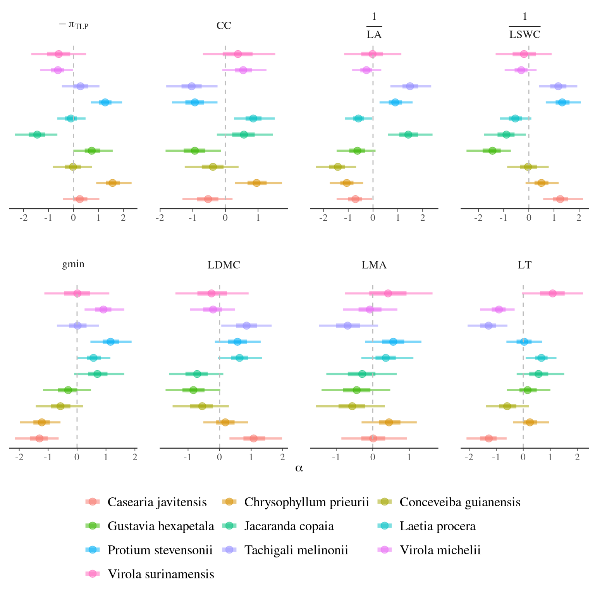

This book is in Open Review. I want your feedback to make the book better for you and other readers. To add your annotation, select some text and then click the on the pop-up menu. To see the annotations of others, click the in the upper right hand corner of the page
Chapter 9 Models
The subsequent analysis aimed to graphically explore variations in leaf traits according to 4 descriptors: (i) tree ontogeny, (ii) biotic interactions and (iii) abiotic environment, and (iv) phylogeny through taxonomic levels. From these observations we developed a generic model linking individual phenotype to its descriptors. The generic model will be inferred later using Bayesian inference.
9.1 Check


9.2 Summary
| Trait | Species | \(\alpha_s\) | \(\beta_{DBH}\) | \(\beta_{TWI}\) | \(\gamma_{TWI}\) | \(\sigma^2\) |
|---|---|---|---|---|---|---|
| \(LMA\) | All | 0.039 | 0.959 | |||
| \(LMA\) | Casearia javitensis | 0.202 | 0.837 | 0.070 | ||
| \(LMA\) | Chrysophyllum prieurii | 0.383 | 0.809 | 0.400 | ||
| \(LMA\) | Conceveiba guianensis | -0.594 | 0.904 | 0.068 | ||
| \(LMA\) | Gustavia hexapetala | -0.460 | 0.966 | 0.274 | ||
| \(LMA\) | Jacaranda copaia | -0.329 | 0.988 | -0.053 | ||
| \(LMA\) | Laetia procera | 0.342 | 0.770 | 0.053 | ||
| \(LMA\) | Protium stevensonii | 0.491 | 0.760 | -0.027 | ||
| \(LMA\) | Tachigali melinonii | 0.245 | 0.819 | 0.194 | ||
| \(LMA\) | Virola michelii | -0.862 | 0.481 | 1.273 | ||
| \(LMA\) | Virola surinamensis | 0.354 | 0.900 | 0.120 | ||
| \(LDMC\) | All | -0.021 | 0.918 | |||
| \(LDMC\) | Casearia javitensis | 1.168 | 0.630 | 0.443 | ||
| \(LDMC\) | Chrysophyllum prieurii | 0.118 | 0.800 | 0.526 | ||
| \(LDMC\) | Conceveiba guianensis | -0.569 | 0.994 | 0.230 | ||
| \(LDMC\) | Gustavia hexapetala | -0.763 | 0.882 | -0.117 | ||
| \(LDMC\) | Jacaranda copaia | -0.694 | 0.817 | 0.014 | ||
| \(LDMC\) | Laetia procera | 0.628 | 0.647 | 0.051 | ||
| \(LDMC\) | Protium stevensonii | 0.489 | 0.797 | -0.036 | ||
| \(LDMC\) | Tachigali melinonii | 0.888 | 0.774 | -0.248 | ||
| \(LDMC\) | Virola michelii | -0.260 | 0.905 | -0.038 | ||
| \(LDMC\) | Virola surinamensis | -0.289 | 0.917 | 0.045 | ||
| \(LT\) | All | 0.064 | 0.819 | |||
| \(LT\) | Casearia javitensis | -0.937 | 0.758 | 0.151 | ||
| \(LT\) | Chrysophyllum prieurii | 0.233 | 0.864 | -0.386 | ||
| \(LT\) | Conceveiba guianensis | -0.607 | 0.894 | 0.156 | ||
| \(LT\) | Gustavia hexapetala | 0.064 | 1.050 | 0.180 | ||
| \(LT\) | Jacaranda copaia | 0.481 | 1.049 | -0.100 | ||
| \(LT\) | Laetia procera | 0.628 | 0.383 | -0.052 | ||
| \(LT\) | Protium stevensonii | 0.015 | 0.818 | -0.096 | ||
| \(LT\) | Tachigali melinonii | -1.290 | 0.596 | -0.163 | ||
| \(LT\) | Virola michelii | -0.974 | 0.652 | -0.702 | ||
| \(LT\) | Virola surinamensis | 1.034 | 0.656 | 0.492 | ||
| \(\frac{1}{LA}\) | All | 0.048 | 0.650 | |||
| \(\frac{1}{LA}\) | Casearia javitensis | -0.797 | 0.848 | 0.019 | ||
| \(\frac{1}{LA}\) | Chrysophyllum prieurii | -1.006 | 0.614 | -0.519 | ||
| \(\frac{1}{LA}\) | Conceveiba guianensis | -1.444 | 0.615 | -0.048 | ||
| \(\frac{1}{LA}\) | Gustavia hexapetala | -0.660 | 0.927 | -0.485 | ||
| \(\frac{1}{LA}\) | Jacaranda copaia | 1.438 | 0.720 | 0.031 | ||
| \(\frac{1}{LA}\) | Laetia procera | -0.599 | 0.461 | -0.324 | ||
| \(\frac{1}{LA}\) | Protium stevensonii | 0.866 | 0.790 | 0.357 | ||
| \(\frac{1}{LA}\) | Tachigali melinonii | 1.613 | 0.703 | -0.082 | ||
| \(\frac{1}{LA}\) | Virola michelii | -0.538 | 0.838 | 0.225 | ||
| \(\frac{1}{LA}\) | Virola surinamensis | -0.062 | 0.902 | 0.102 | ||
| \(CC\) | All | -0.022 | 0.848 | |||
| \(CC\) | Casearia javitensis | -0.229 | 0.876 | 0.110 | ||
| \(CC\) | Chrysophyllum prieurii | 0.855 | 0.763 | -0.219 | ||
| \(CC\) | Conceveiba guianensis | -0.363 | 0.963 | -0.377 | ||
| \(CC\) | Gustavia hexapetala | -0.947 | 0.805 | -0.226 | ||
| \(CC\) | Jacaranda copaia | 0.587 | 0.988 | -0.033 | ||
| \(CC\) | Laetia procera | 0.870 | 0.525 | 0.728 | ||
| \(CC\) | Protium stevensonii | -0.856 | 0.615 | -1.079 | ||
| \(CC\) | Tachigali melinonii | -0.978 | 0.713 | 0.037 | ||
| \(CC\) | Virola michelii | 0.555 | 0.852 | -0.009 | ||
| \(CC\) | Virola surinamensis | 0.429 | 0.908 | -0.058 | ||
| \(g_{min}\) | All | -0.014 | 0.776 | |||
| \(g_{min}\) | Casearia javitensis | -0.982 | 0.657 | -0.121 | ||
| \(g_{min}\) | Chrysophyllum prieurii | -1.212 | 0.643 | -0.383 | ||
| \(g_{min}\) | Conceveiba guianensis | -0.694 | 0.830 | 0.079 | ||
| \(g_{min}\) | Gustavia hexapetala | -0.457 | 0.898 | 0.564 | ||
| \(g_{min}\) | Jacaranda copaia | 0.646 | 1.010 | -0.174 | ||
| \(g_{min}\) | Laetia procera | 0.525 | 0.561 | -0.680 | ||
| \(g_{min}\) | Protium stevensonii | 1.622 | 0.585 | -0.243 | ||
| \(g_{min}\) | Tachigali melinonii | -0.161 | 0.856 | -0.484 | ||
| \(g_{min}\) | Virola michelii | 0.813 | 0.756 | 0.297 | ||
| \(g_{min}\) | Virola surinamensis | -0.062 | 0.885 | -0.363 | ||
| \(\pi_{TLP}\) | All | -0.014 | 0.670 | |||
| \(\pi_{TLP}\) | Casearia javitensis | 0.772 | 0.707 | 0.670 | ||
| \(\pi_{TLP}\) | Chrysophyllum prieurii | 1.587 | 0.538 | -0.415 | ||
| \(\pi_{TLP}\) | Conceveiba guianensis | -0.065 | 1.058 | 0.070 | ||
| \(\pi_{TLP}\) | Gustavia hexapetala | 0.713 | 0.976 | -0.197 | ||
| \(\pi_{TLP}\) | Jacaranda copaia | -1.507 | 0.326 | 0.109 | ||
| \(\pi_{TLP}\) | Laetia procera | -0.141 | 0.731 | -0.883 | ||
| \(\pi_{TLP}\) | Protium stevensonii | 1.306 | 0.530 | 0.158 | ||
| \(\pi_{TLP}\) | Tachigali melinonii | 0.342 | 0.870 | 0.459 | ||
| \(\pi_{TLP}\) | Virola michelii | -0.668 | 0.808 | 0.205 | ||
| \(\pi_{TLP}\) | Virola surinamensis | -0.703 | 0.844 | 0.037 | ||
| \(RWC\) | All | 0.017 | 1.013 | |||
| \(RWC\) | Casearia javitensis | 0.002 | 0.853 | -0.222 | ||
| \(RWC\) | Chrysophyllum prieurii | -0.634 | 0.749 | -0.260 | ||
| \(RWC\) | Conceveiba guianensis | 0.293 | 1.007 | 0.433 | ||
| \(RWC\) | Gustavia hexapetala | 0.413 | 0.954 | 0.087 | ||
| \(RWC\) | Jacaranda copaia | -0.730 | 0.939 | 0.098 | ||
| \(RWC\) | Laetia procera | 0.238 | 0.778 | -0.123 | ||
| \(RWC\) | Protium stevensonii | -0.019 | 0.799 | -0.002 | ||
| \(RWC\) | Tachigali melinonii | 0.414 | 0.934 | -0.230 | ||
| \(RWC\) | Virola michelii | -0.039 | 0.904 | -0.097 | ||
| \(RWC\) | Virola surinamensis | 0.047 | 0.928 | 0.078 | ||
| \(\frac{Fm}{Fv}\) | All | 0.039 | 0.970 | |||
| \(\frac{Fm}{Fv}\) | Casearia javitensis | -0.763 | 0.770 | 0.518 | ||
| \(\frac{Fm}{Fv}\) | Chrysophyllum prieurii | -0.363 | 0.801 | -0.708 | ||
| \(\frac{Fm}{Fv}\) | Conceveiba guianensis | 0.142 | 0.971 | -0.111 | ||
| \(\frac{Fm}{Fv}\) | Gustavia hexapetala | 0.703 | 0.820 | -0.503 | ||
| \(\frac{Fm}{Fv}\) | Jacaranda copaia | -0.161 | 0.981 | 0.153 | ||
| \(\frac{Fm}{Fv}\) | Laetia procera | 0.007 | 0.800 | -0.378 | ||
| \(\frac{Fm}{Fv}\) | Protium stevensonii | -0.009 | 0.818 | -0.167 | ||
| \(\frac{Fm}{Fv}\) | Tachigali melinonii | 0.013 | 0.885 | 0.188 | ||
| \(\frac{Fm}{Fv}\) | Virola michelii | -0.520 | 0.886 | 0.095 | ||
| \(\frac{Fm}{Fv}\) | Virola surinamensis | 0.285 | 0.777 | 0.621 |
9.3 Intercept

Figure 9.1: Model species effect for Intercept.
9.4 DBH

Figure 9.2: Model species effect for DBH slope.

Figure 9.3: Model predictions with DBH.
9.5 TWI

Figure 9.4: Model species effect for TWIs slope.

Figure 9.5: Model species effect for TWIis slope.

Figure 9.6: Model species effect for TWIs & TWIis slope.

Figure 9.7: Model predictions with TWI.